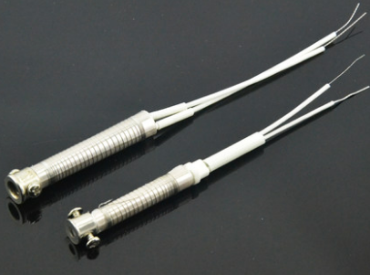
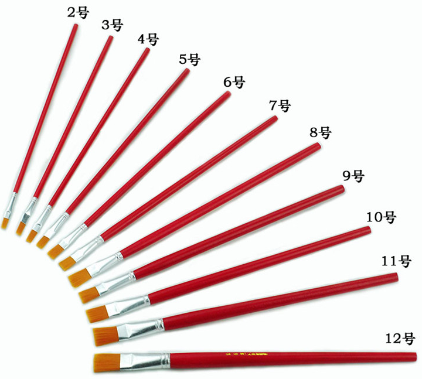
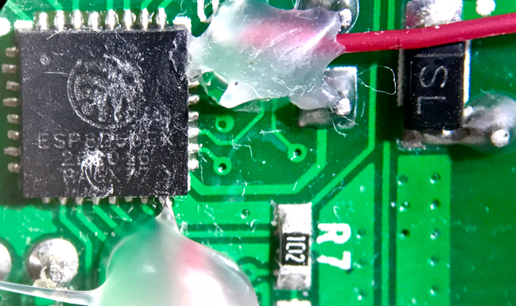
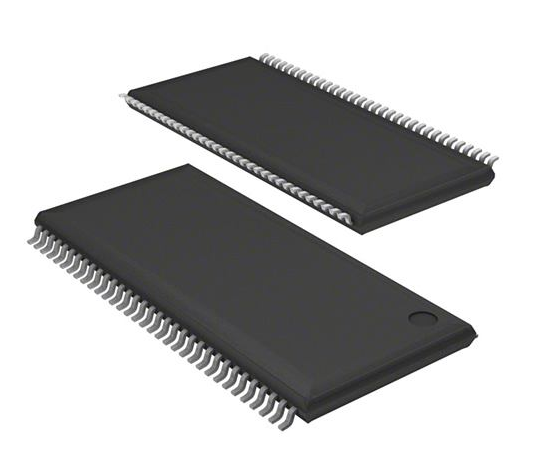

Soldering Station

A soldering station consists of an external power supply plus a heat gun (hot air) or a soldering iron. It heats solder (usually solder wire) to melt it, so two parts can be joined together.
Compared to a standalone soldering iron, a soldering station’s power supply can control output power, so it has many advantages: fast solder melting, anti-static, sleep mode, temperature control, and better safety.
Depending on the power supply and intended use, the market mainly has the following types (and there are also 3-in-1 stations):
- Constant-temperature soldering station
- Hot air rework station
- High-frequency soldering station
Soldering Iron Tips
Soldering iron tips (Tips) are mainly made of copper, with plated layers containing iron, nickel, chromium, and tin. The core manufacturing process is electroplating.
- Copper - heat conduction
- Iron - corrosion resistance, extends service life
- Nickel - prevents the iron-plated layer from rusting
- Chromium - non-wetting, prevents solder from creeping upward
- Tin - used at the tip surface for tinning
Tip lifetime is usually measured in solder joints; with normal use it is typically 15,000+ joints. Plating thickness affects lifetime, and so does temperature—generally keep it below 380°C.
Maintain the tip properly: before soldering, clean off old solder and oxides, then tin and solder. After use, apply a layer of solder to prevent oxidation—once oxidized, it won’t wet with solder.
Tips are also constrained by power rating; choose an appropriate tip based on the power supply’s output.
Based on heater structure and heat transfer, tips/heating styles are commonly categorized as internal heating type and external heating type.
Internal heating type

The heating wire is wound around a ceramic rod, insulated by a ceramic tube, and the tip sleeve sits over the ceramic tube. Heat transfers from the inside to the outside.
Heats up quickly, has high thermal efficiency, uses lower power, suitable for precision components, produces no induced current, but has a shorter service life.
External heating type

The heating wire is wound around an iron tube with a hole in the middle, insulated inside and out with mica sheets. The tip is inserted into the center hole, and heat transfers from the outside to the inside.
Heats up slowly, lower thermal efficiency, higher power, suitable for larger workpieces, and is more likely to generate induced current that can damage precision electronic components—grounding is recommended during soldering.
Shapes and uses

Different tip shapes have different uses. Common types on the market include:
- Round (B) - suitable for both point soldering and drag soldering
- Knife (K) - drag soldering; fixing solder bridges
- Conical (I) - jumper wires; fine soldering; fixing solder bridges
- Hoof / bent conical (I) - jumper wires; drag soldering; fine soldering; fixing solder bridges
- Bevel / chisel cup (C) - thicker wires/materials; large-area soldering
- Flat (D) - thicker wires/materials; large-area soldering
Heat gun
A heat gun mainly uses hot air blown from a heating element to solder components and to remove components. You can control airflow and temperature; temperature is generally set between 300°C and 400°C. Use different nozzles for different components.

Flux
Rosin block

Rosin blocks sold on the market are commonly used on soldering iron tips. Key properties:
- Removes oxide film
- Prevents oxidation
- Reduces the surface tension of molten solder
Soldering paste (flux paste)

Also called soldering oil/flux paste. It’s an oily substance with a melting point lower than rosin, and a boiling point only slightly higher than solder’s melting point. It increases solder flow/wetting and can also be used to clean excess solder. Its tackiness can temporarily hold IC components in place. Most flux pastes are acidic and can corrode PCBs; it’s recommended to use no-clean, neutral flux paste.
Solder
Solder comes in leaded and lead-free types. The lead/tin ratio affects the melting point. Leaded solder is harmful to the environment and the human body. Fumes can contain tin oxides as well as lead and its compounds, which may cause pneumoconiosis. Lead-free solder has a higher melting point and poorer soldering performance. Wear a mask and work in a well-ventilated environment.
Solder wire

It consists of two parts: solder alloy and flux core. For precision components, solder wire with flux is commonly used; it offers good flow and produces shiny, full solder joints.
Solder balls

Also called Solder ball. These spherical solders are used for BGA reballing (reballing) and are soldered using reflow.
Solder paste

Also called solder paste (Solder paste). It mainly consists of flux and solder powder. The flux is mainly made of activators, thixotropic agents, resins, and solvents. It’s used with reflow soldering: after heating, the paste flows to the joints and the solvent evaporates.
Store it at 5–10°C. Shelf life is typically 6 months; after opening, it should be used within 5 days. If it dries out, dilute it with a few drops of solder paste thinner.
Before use, let it warm up to room temperature, mix thoroughly. For BGA reballing, use a stencil and squeegee; for TSOP packages, apply a small amount directly with a brush.
Other tools
Vacuum pickup pen
Also called an IC puller. Used together with drag-soldering to lift SMD ICs.

Anti-static tweezers
For all kinds of delicate work; essential for jumper wires.

Reballing stencil

Anti-static soft brush

Scraper / squeegee
IC scraper: some manufacturers glue ICs in place; this is used to remove adhesive. It can also scrape off PCB solder mask for jumper wiring.

Solder paste squeegee: used to press solder paste into the reballing stencil.

Magnet wire
Typically 0.1mm diameter, used for jumper wires.

Conductive silver paint
Used to connect two solder points on a PCB (acting like a jumper wire). It can also be used to repair lifted pads.


Scrape open the trace leading to the pad, apply conductive silver paint, and after it dries the connection is repaired.

Cleaning
High-temperature sponge

Used to clean soldering tips. Wet it before use and squeeze out excess water; moisture can corrode the tip. When cleaning, use appropriate force and wipe repeatedly in the same direction. If the oxide layer is too thick, dip it in rosin and rub it off.
Tip cleaning ball

Used to clean tips. Compared to a high-temperature sponge, it cleans more aggressively. It’s made of copper shavings and contains flux, helping extend tip lifetime.
Desoldering braid
Mainly made of copper braid. Used together with flux paste to remove solder bridges or solder “nets”.

Desoldering pump
Used to remove larger blobs of solder, after heating the solder with a soldering iron.

PCB cleaning solution

Also called adhesive remover. Used to dissolve flux residue left on a PCB, preventing solder paste from corroding the PCB.
Wire connector

Insulation-displacement wire connector
- Solid single-core wire
- Solid multi-core wire
- Stranded wire
Protection
Hot glue gun

Used to glue components in place and protect solder joints. Typically applied after jumper wiring.

High-temperature tape

High-temperature tape for PCB protection, also called PET. It comes in many colors (mainly just different pigments). Masking tape can also be used. Heat-resistant; used to protect electronic components that are not the soldering target.
Component types
Different component types require different soldering processes.
Through-hole
PTH (Plating Through Hole) refers to through-hole components. Point soldering is commonly used.

Surface-mount
SMT (surface mounting technology) refers to surface-mount technology. Different package types use different soldering methods. TQFP and TSOP are commonly drag-soldered or hot-air soldered. BGA typically requires hot air.
TQFP

TSOP

BGA

The typical process is as follows. SMT requires higher skill; it’s recommended to use a rework station (rework station).
- Solder paste printing
- Placement
- Reflow soldering


If it’s a BGA package without alignment marks/white lines, it’s recommended to use an optical rework station for alignment (these usually cost over ten thousand).
 CC BY-NC-SA 4.0
CC BY-NC-SA 4.0